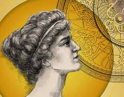
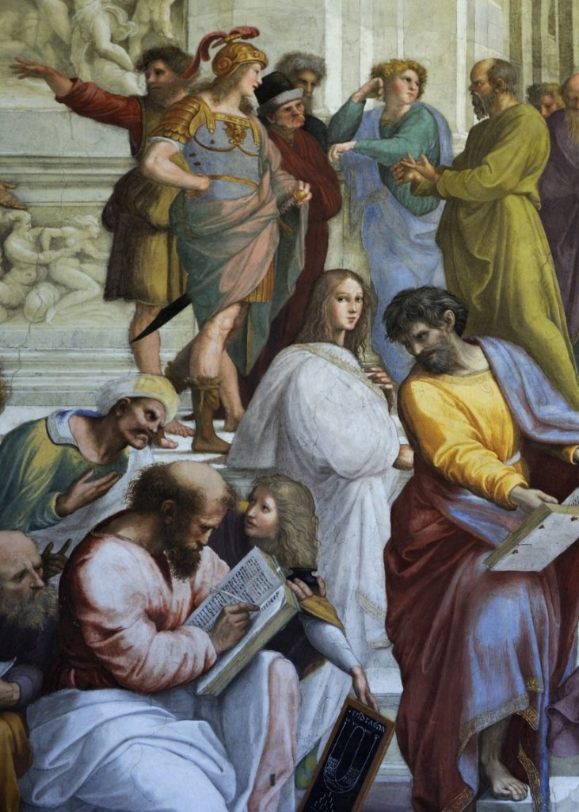
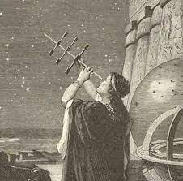
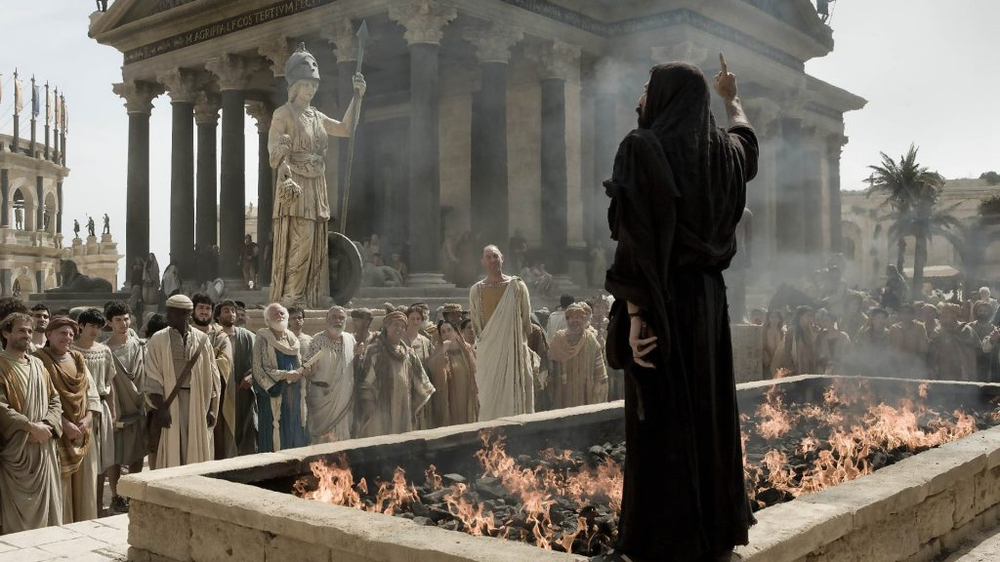

Tanrılardan Ateşi Çalacağız!
Anasayfa |
Özgür Kadın Hypatia |
Hypatia’nın Vahşice Öldürülmesi|
İletişim
Antik Dünyanın Son Bilim İnsanı İskenderiyeli Hypatia Kimdir?
Özgür Kadın Hypatia
Hypatia, İskenderiyeli sıradan kadınların evlerinin dışında nadiren göründükleri bir zamanda sıklıkla şehir merkezinde halk eğitimleri veriyordu. Erkek meslektaşları tarafından giyilen sıkıca dokunmuş beyaz cüppesinin içinde büyük bir etkileyicilikle matematik, astronomi, tarih ya da Platon’la Aristoteles’in felsefeleri üzerine konuşuyordu. Konuşmasını duymak için toplanan halk, entelektüel bilgisinin genişliği, sözcüklerindeki tutku ve güzelliğinin boyutu karşısında büyüleniyordu. Hypatia’ya ait hiçbir resim ya da heykel günümüze ulaşmış değil ama fiziksel varlığı öylesine biliniyordu ki ondokuzuncu yüzyılda Fransız şair Charles Leconte de Lisle onun ”Platon’un ruhu ve Afrodit’in Vücuduna sahip” olduğunu söylüyordu.

Buna rağmen ve belki de bu nedenle, anlatıldığına göre Hypatia bakire kaldı ve hayatını bilim, felsefe ve eğitime adadı. Hakkındaki en ünlü hikâyelerden birinde Hypatia, öğrencilerine güzelliğin doğasına dair dersler veriyordu. Onlara şöyle söylüyordu:
”Bir adam kadın vücudunun güzelliğini gördüğünde onu şehvetle fethetme arayışma girmemeli. Bunun yerine onun güzelliğinin, gerçek güzelliğin bir sureti olduğunu anlamalı. İnsan, hayvani doğasının en alçak yerlerine bir kez daldığında güzelliğin asıl özü üzerine düşünemez, kendi körlüğünde ve Hades’in aldatıcı gölgeleri içinde yaşamak zorunda kalır.”
Anlaşılan öğrencilerinden biri mesajı anlayamamıştı, çünkü dersten sonra yanına gidip onu sevdiğini söylemişti. Hypatia, anlattığı şeyi daha iyi vurgulamak için çantasına uzandı ve Mısır’da kullanılan bir çeşit kadın pedini çıkarıp genç adama şöyle dedi: ”Sevdiğin şey bu. Sen gerçek güzelliği sevmiyorsun.”
Filozof Hypatia

Her nesnenin ardında daha derin bir gerçeklik yattığı ve görünür nesnelerin özü fikri, Hypatia’nın ve diğer neoplatonistlerin felsefelerinin çekirdeğini oluşturuyordu. Platon gibi onlar da rasyonel düşüncenin gücüne inanıyorlardı. Hypatia, Platon’un daha büyük bir anlayışa erişmek için kullandığı sorgulama tekniğine büyük değer veriyordu. Pagan olmasına rağmen mitlere olan körü körüne inanışa karşı temkinliydi. Diğer bir deyişle, ”masallar masal olarak, mitler mit ve mucizeler şiirsel fanteziler olarak kalmalı. Batıl inançları gerçekmiş gibi öğretmek en korkuncu. Bir çocuğun zihni onları kolayca alabilir ama ancak büyük acılar hatta belki de trajediler yaşadıktan sonra onlardan kurtulabilir”. Bu sözler gelecek yıllara dair birer kehanet gibiydi.
Hypatia’nın ünü yayılırken fikirleri şehrin önde gelenleri tarafından değerli bulunmaya başlamıştı. Ona pek çok onur madalyası verdiler. İki tekerlekli arabalarının üzerinde şehrin önemli kişileri, konsey üyeleri, hatta askerler, zamanın önemli meseleleri üzerine ondan tavsiyeler almak
üzere evine gelip gidiyorlardı. Hatta İskenderiye’nin Roma imparatoru tarafından atanmış valisi Orestes, onu konseye kabul etmişti. İkisi yakın arkadaş olmuştu. Sıklıkla şehrin sokaklarında dolaşıp felsefe ve politika üzerine tartışırken görülüyorlardı.
Pagan, Yahudi ve Hristiyan Çatışmaları
Kabul etmek gerekir ki güzel, konuşkan ve etkileyici bir kadın, dehası ne kadar büyük ya da icatları ne kadar etkileyici olursa olsun, popüler çılgın bilim adamı imajını tam olarak karşılamıyor. Trajik bir biçimde Hypatia’da bu imaja karşılık gelen şey, yaşamından çok ölümüdür. Matematikçiler, astronomlar ve mucitlerin bu en yeteneklisi, sevilen öğretmen, zengin ve güçlü konsey üyesi Hypatia, birçok hayali çılgın bilim adamı gibi öfkeli bir kalabalığın ellerinde can verdi.
İskenderiye, beşinci yüzyılın başında, sivil otoritenin başı Orestes’le şehrin Hristiyan piskoposu Cyril arasındaki bir güç çatışmasının ortasında kaldı. Hypatia, bir Paganolmasına rağmen, Roma İmparatorluğu artan bir biçimde Hristiyanlaşırken gerçekleşen Pagan temizliğinden kaçmayı başarmıştı. Daha önce de anlatıldığı gibi Hypatia, her dinden öğrenciyi okuluna kabul etmişti ve bu öğrencilerden birkaçı kilisenin önde gelen liderleri olmuştu. Ama kilise ve devlet arasındaki çatışma daha da gergin bir hal alırken, Hypatia kendini iki ateş arasında buldu. Cyril, çok geçmeden güçlü bir konuma yükselmesinin araçlarından birinin, ayak takımından kimselerin gücü olduğunu anlamıştı. Bir araya gelmelerini sağlayacak bir şey verdiğinde onları kendi amaçları doğrultusunda yönlendirebiliyordu. Şehir kilisesinde liderliğini de bu şekilde ele geçirmişti.

İskenderiye’nin önceki piskoposu Theofilos, M.S. 412 yılında öldüğünde yerini alacak iki aday bulunuyordu. Yeğeni Cyril, takipçilerinin, başdiyakozu Timothy ise kilise hiyerarşisinin desteğini almıştı. Üç gün süren kanlı bir sokak çatışmasından sonra Cyril, yeni piskopos olarak yerini aldı. Gücünü pekiştirmek için takipçilerini önce Novitian tarikatına üye olan Hristiyanların sonra da büyük Yahudi nüfusunun üzerine saldı.
Söylentiler çılgınca yayılıyor ve bunu aya takımından kişilerin yarattığı vahşet takip ediyordu. Pagan tapınağı Serapium harap edilmiş ve kütüphanesi yakılmıştı. Cyril, Yahudi toplumunu kışkırtması için ajan provokatörlerini gönderdi ve toplum içindeki Yahudi radikaller, Hristiyanları pusuya düşürdü. Saldırılar ve karşı saldırılar aylar boyunca devam etti. Sivil otoriteler olayları durdurmakta yetersiz görünüyordu. Sokaklar Pagan, Yahudi ve Hristiyan kanıyla kırmızıya boyanmıştı.